作者：创世魂
●内容(读写)
帮助文档如下图：
通过本属性可以设置超级编辑框的内容。
同名的读属性可以用于取出超级编辑框的内容。
注意：如果“内容格式”属性为“RTF丰富文本”，则本属性将无法设置普通文本到编辑框中显示，必须提供RTF丰富文本格式才能进行设置。
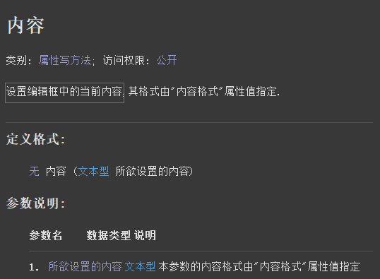
界面设计如下图：
配置“MFC扩展界面支持类库1”模块后，就可以在基本组件中找到超级编辑框组件。
同时再放两个按钮到窗口上。
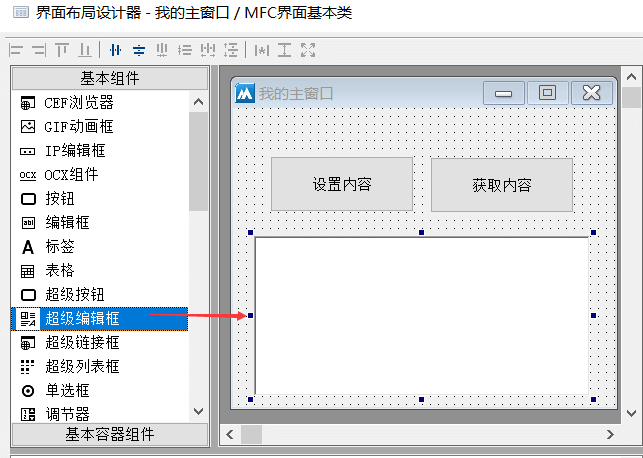
代码编写如下图：
1、按钮1点击后设置超级编辑框的内容。
2、按钮2点击后取出超级编辑框的内容到信息框中。
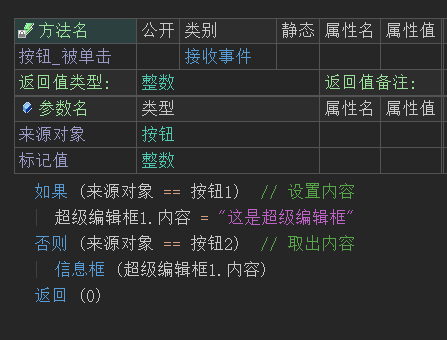
运行效果如下图：
最终可以看到超级编辑框的内容可以被正常的设置和读取。
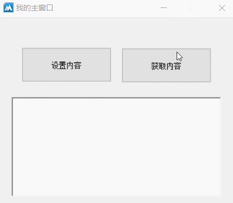
● 内容格式(写)
帮助文档如下图：
通过本属性可以设置超级编辑框所显示的内容格式。
本属性共有两个选项，分别为“纯文本”和“RTF丰富文本”。
纯文本：就是不带任何效果的普通文本格式。
RTF丰富文本：是由微软公司开发的跨平台文档格式，支持不同文字设置不同颜色、字号等多样效果，系统自带的写字板就可以保存为此格式。
注意：一旦设置为RFT丰富文本格式后，将无法通过“内容”属性设置普通文本进去，必须是RTF格式的文本才能进行设置内容。
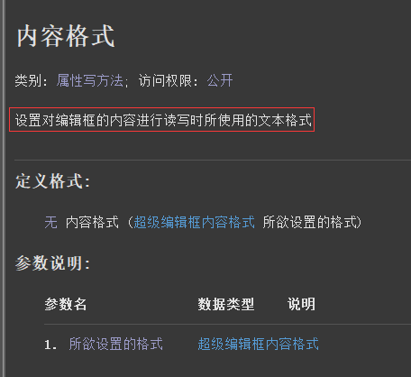
界面设计如下图：
选中超级编辑框组件，右侧属性栏设置为“RTF丰富文本”。
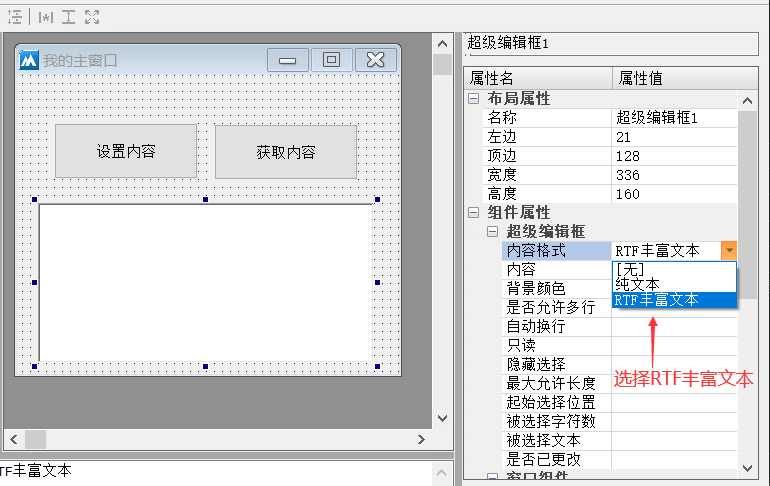
准备工作：
1、打开系统自带的写字板软件，随便的输入几个文字，并设置一些字体样式。
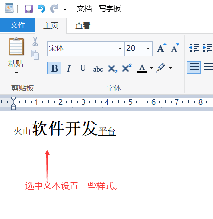
2、将文件保存为“RTF文本文档”。
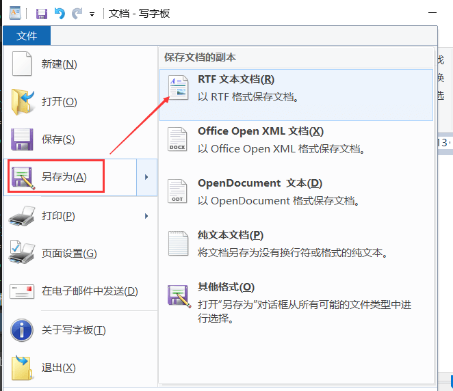
代码编写如下图：
1、按钮1点击后，利用“读入文本文件()”方法读取刚刚保存的rtf文档，读取到超级编辑框中。
2、按钮2点击后取出超级编辑框的内容。
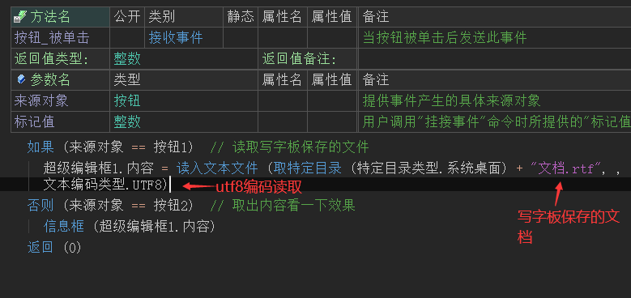
运行效果如下图：
最终可以看到当文档被读取后，依然保持原有的格式效果。
但是如果想要获取内容，会发现获取的全是一堆乱七八糟的符号信息。
这些符号信息就是rtf格式内容。
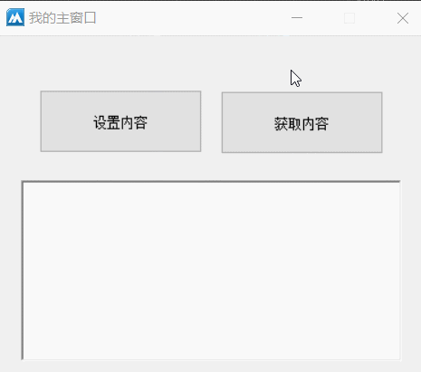
如果想要获取出正常的文本也非常简单。
在获取之前重新将“内容格式”属性设置为“纯文本”格式即可。
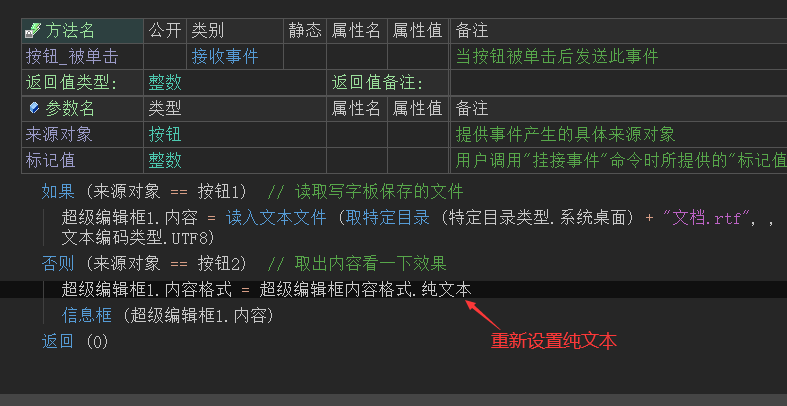
最终可看到，超级编辑框的内容被正常获取。
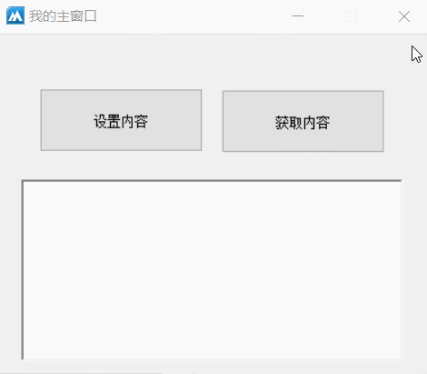
● 只读(写)
帮助文档如下图：
通过本属性可以设置当前超级编辑框是否只读。
属性值提供真，则只能通过“内容”属性设置内容，将无法通过键盘录入内容。
注意：本属性只能在设计器中设置或者组件表格属性中设置，无法动态设置。
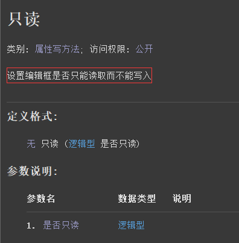
界面设计如下图：
选中超级编辑框组件，设置“只读”属性为真。
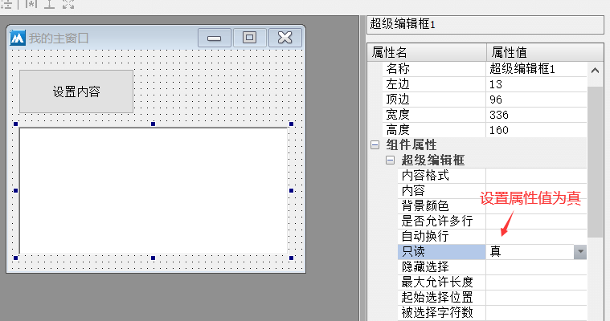
代码编写如下图：
按钮点击后动态修改超级编辑框的内容。
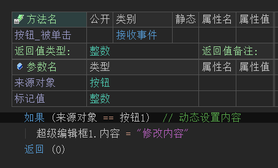
运行效果如下图：
最终可以看到设置只读属性后，虽然无法通过键盘录入内容，但是不影响通过“内容”属性设置。
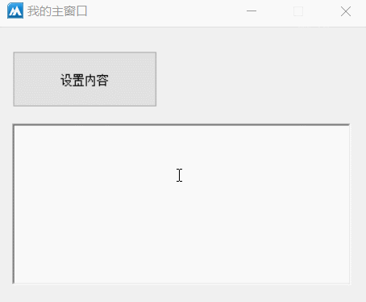
● 是否允许多行(写)
帮助文档如下图：
通过本属性可以设置当前超级编辑框是否支持多行文本输入。
属性值提供真，则表示允许多行，否则不允许。
注意：本属性只能在设计器中设置，或在组件的属性表中设置。
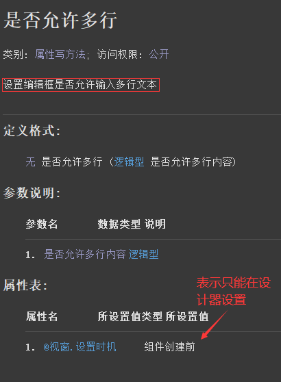
代码编写如下图：
1、在超级编辑框的属性表中设置本属性为假。
2、按钮点击后输入一段多行文本。
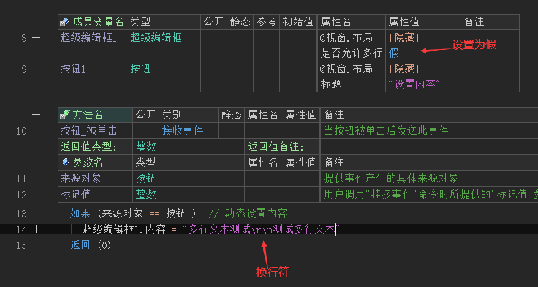
运行效果如下图：
最终可以看到设置内容时，换行符后的内容都被省略，并不会显示在超级编辑框上。
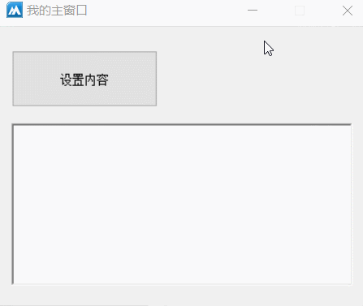
●是否已更改(读写)
帮助文档如下图：
1、通过本属性可以设置当前超级编辑框组件是否被更改标志。
2、如果本属性值设置为假，并且对编辑框进行修改内容操作后，本属性值会自动更改为真。
3、同名的读属性，可以读取当前被更改的状态。
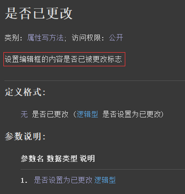
代码编写如下图：
按钮点击后读取被更改状态，如果被更改了并弹出信息框提示“被更改”，同时重置状态。
如果没有被更改就弹出“没有更改”的信息框。
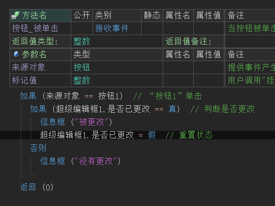
运行效果如下图：
当超级编辑框内容被修改后会提示“被更改”，但是再次点击时会提示“没有更改”，因为状态已经被重置。
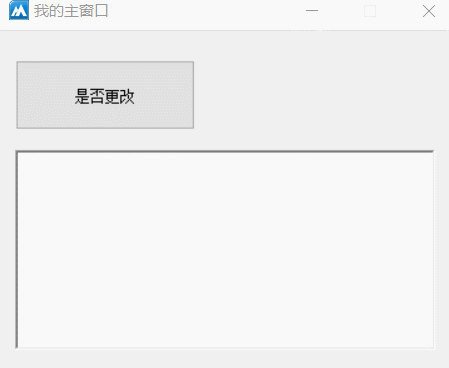
● 最大允许长度(写)
帮助文档如下图：
通过本属性可以限制超级编辑框的最大输入长度，单位是字符。
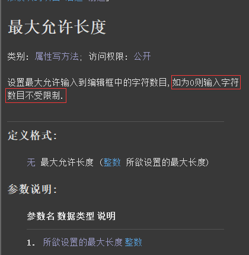
代码编写如下图：
在超级编辑框组件的属性栏设置本属性值为3.
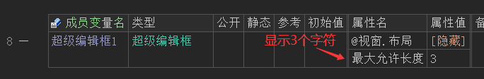
运行效果如下图：
最终软件运行后，编辑框内只能输入3个字符。
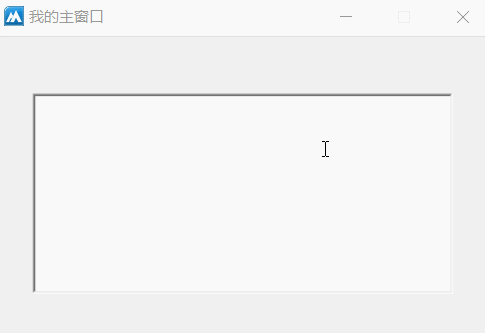
● 背景颜色(写)
帮助文档如下图：
通过本属性可以设置本组件的背景颜色，可以使用“颜色类”中提供的常量值，也可以自定义颜色。
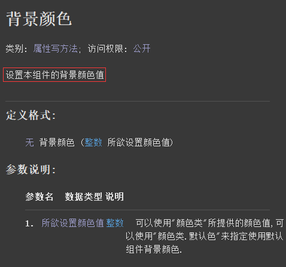
界面设计如下图：
在窗口上放一个按钮，一个颜色选择器组件以及超级编辑框组件。
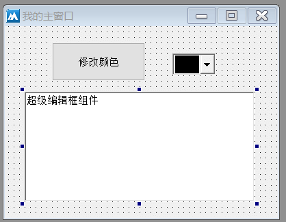
代码编写如下图：
按钮点击后设置本组件的背景颜色为颜色选择器的颜色。
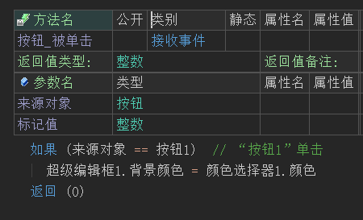
运行效果如下图：
可以看到超级编辑框组件的背景颜色始终和颜色选择器的颜色保持一致。
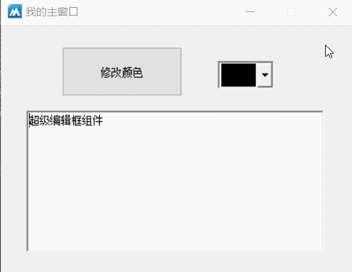
●自动换行(写)
帮助文档如下图：
通过本属性可以设置当前编辑框组件是否支持自动换行，默认为真。
注意：本属性只能在组件属性栏设置。
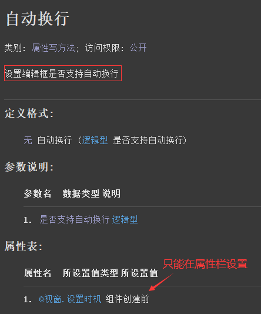
界面设计如下图：
选中组件后，设置“自动换行”属性值为假。
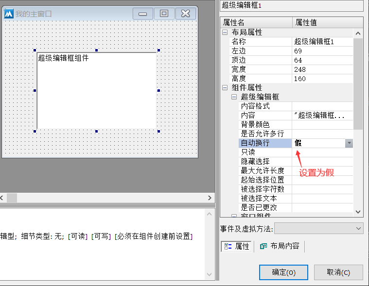
运行效果如下图：
最终可以看到当超级编辑框内容不断增加时，会显示横向滚动条，并不会自动换行。
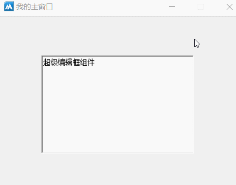
● 起始选择位置(写)
“起始选择位置”帮助文档如下图：
通过本属性可以指定超级编辑框的起始选择位置，索引从0开始，主要用于选择文本操作。
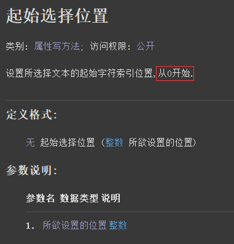
“被选择字符数”帮助文档如下图：
本属性可设置选择的字符数，提供-1将选择到文本结尾。
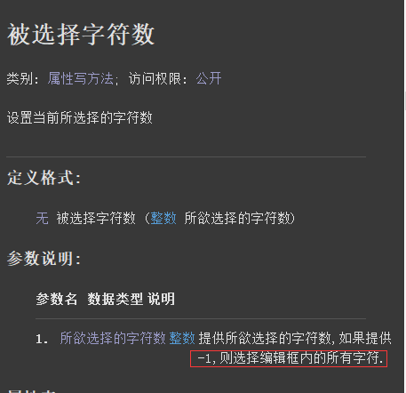
代码编写如下图：
1、首先进行获取焦点，因为按钮点击超级编辑框会失去焦点，无法进行选择文本操作。
2、分别设置这两个属性，从0开始选择3个字符。
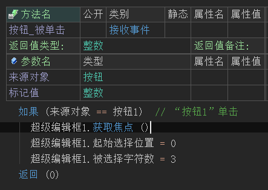
运行效果如下图：
最终可看到编辑框有3个字符被选中。
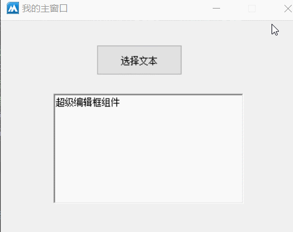
● 被选择文本(读写)
帮助文档如下图：
通过本写属性可以替换被选中的文本，如果没有选择文本则会在光标位置插入文本。
同名的读属性可以读取当前被选择的文本。
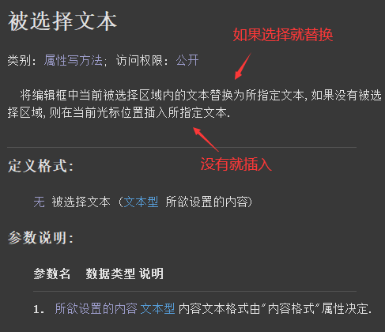
代码编写如下图：
按钮1被单击后执行本属性进行插入或替换选择文本操作。
按钮2被单击后读取被选择的文本。
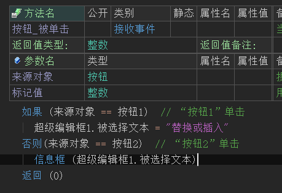
运行效果如下图：
最终可以看到，在编辑框有选区的时候会进行替换操作，当没有选区的时候会进行插入操作。
点击另一个按钮可以取出被选择的文本，如果没有选择会返回空文本。
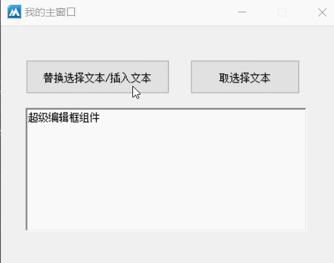
● 隐藏选择(写)
帮助文档如下图：
通过本属性可以设置超级编辑框失去焦点后，是否还显示当前选区。
本属性提供真将隐藏选区，否则继续显示选区。
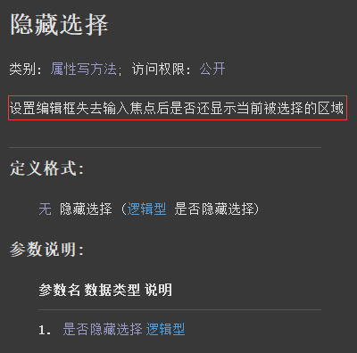
代码编写如下图：
直接在组件属性栏设置本属性即可，根据自己的需求设置真或者假。
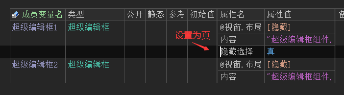
运行效果如下图：
左图：属性值设置为真后，可以看到当组件失去焦点后选区也同时隐藏。
右图：属性值设置为假后，可以看到组件失去焦点后选区依然处于选择状态。
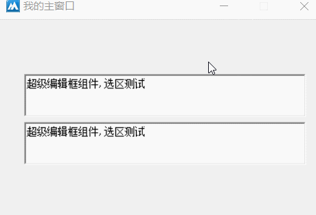
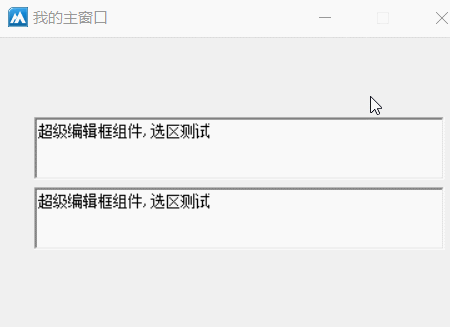
● 删除
帮助文档如下图：
通过本方法可以删除超级编辑框被选择的内容。
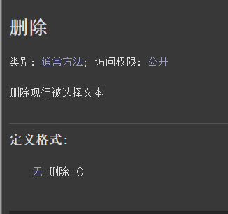
代码编写如下图：
按钮点击后调用本方法进行删除选区内容操作。
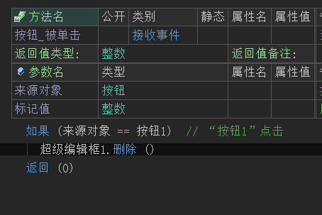
运行效果如下图：
最终可看到超级编辑框存在选区时，按钮点击会进行删除操作。
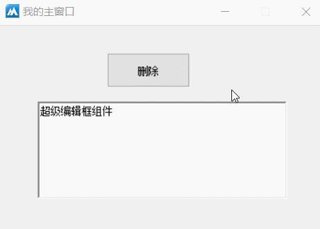
● 剪切
帮助文档如下图：
通过本方法可以将超级编辑框选区中的文本剪切到系统剪贴板中。
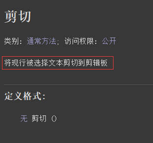
代码编写如下图：
按钮点击后调用本方法进行剪切操作。
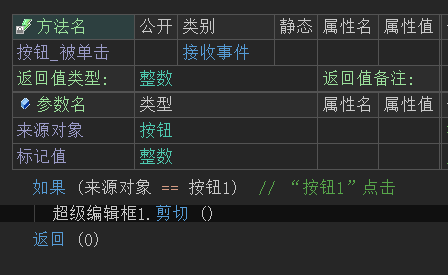
运行效果如下图：
当按钮点击后会发现选区的文本被剪切走，光标切换到另外一个编辑框中按Ctrl+V可以进行粘贴刚刚剪贴的文本。
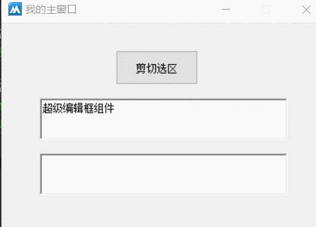
● 复制
帮助文档如下图：
调用本方法可以将超级编辑框选区内的文本进行复制操作。
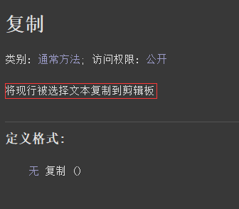
代码编写如下图：
按钮点击后调用本方法进行复制即可。
运行效果如下图：
最终点击按钮复制后，切换编辑框按Ctrl+V可以粘贴刚复制的文本。
● 撤销
帮助文档如下图：
调用本方法可撤销编辑框上一次的更改操作。
代码编写如下图：
按钮点击后调用本方法即可。
运行效果如下图：
当编辑框内容被删除后，点击按钮可进行撤销删除操作。
● 粘贴
帮助文档如下图：
调用本方法可以将系统剪贴板中的文本粘贴到光标所在位置。
代码编写如下图：
按钮点击后在剪贴板中放一串文本，并调用粘贴方法粘贴。
运行效果如下图：
最终可看到“火山软件”四个字被粘贴到了超级编辑框中。
● 清空撤销数据
帮助文档如下图：
通过本方法可以将超级编辑框的撤销数据清空。
代码编写如下图：
按钮点击后，首先调用“清空撤销数据()”进行清空，然后在调用“撤销()”方法，测试是否能撤销。
运行效果如下图：
最终可看到当编辑框内容被改变后，取点击按钮不会有任何撤销更改的操作，因为撤销数据已经清空。
● 寻找
帮助文档如下图：
调用本方法可以在超级编辑框中查找指定文本，未找到则返回-1.
参数1：提供起始查找位置，留空则为0.
参数2：是否区分大小写，留空则为真。
参数3：是否匹配单词，留空则为假。
参数4：提供要查找的文本。
代码编写如下图：
利用查找方法的特性，结合选择位置实现查找选择文本的效果。
1、首先调用“寻找()”方法查找“开发”。
2、让编辑框获得焦点以便于实现选区效果。
3、设置“起始选择位置”和“被选择字符数”属性，用来将找到的文本选择起来。
运行效果如下图：
按钮点击后可以看到“开发”两个字被选中，证明查找成功。
● 加入文本
帮助文档如下图：
通过本方法可以添加内容到超级编辑框的尾部，本方法共有四个参数。
参数1：提供要添加的文本。
参数2：用于设置字符样式，譬如字体尺寸颜色等，可空。
参数3：用于设置段落样式，可空。
参数4：是否自动滚动到尾部，默认为真。
代码编写如下图：
1、首先定义类型为“超级编辑框字符格式”的变量，设置字符格式信息。
2、调用加入文本方法加入测试文本，并设置字符格式。
运行效果如下图：
最终可看到按钮点击后，添加的文本和原有文本的字符格式不同。
● 加入文本行
帮助文档如下图：
本方法与“加入文本()”方法不同之处在于，本方法会在要加入文本的结尾自动添加一个换行符，实现行文本添加。
除此之外其余参数的作用与“加入文本()”方法一致。
代码编写如下图：
按钮点击后调用本方法加入一行文本。
运行效果如下图：
最终可看到文本被一行一行的加入。
● 取字符所在行
帮助文档如下图：
通过本方法可以取出指定字符位置所在行，提供-1则取出光标位置所在行。
返回的行号从0开始，0表示第一行以此类推。
代码编写如下图：
添加超级编辑框的“鼠标左键被放开”事件，然后调用“取字符所在行”，这样就可以实现鼠标点击编辑框后实时取出所在行。
运行效果如下图：
最终可看到窗口标题会实时显示当前所在行。
● 取文本长度
帮助文档如下图：
通过本方法可以取出当前超级编辑框中的字符长度。
注意：一个汉字，标点符号，英文字母，数字都属于一个字符。
代码编写如下图：
按钮点击后取出当前编辑框的字符长度显示在信息框中。
运行效果如下图：
最终字符长度可以被取出。
● 取行数
帮助文档如下图：
通过本方法可以取出当前超级编辑框组件的所有行数。
代码编写如下图：
按钮点击后调用本方法取出行数显示在信息框中。
运行效果如下图：
最终可以看到行数被取出。
● 取行文本
帮助文档如下图：
通过本方法可以取出超级编辑框指定行的行文本。
注意：行号从0开始，0表示第一行，以此类推。
代码编写如下图：
按钮点击后利用“取随机数()”方法进行随机取行文本。
运行效果如下图：
最终可以看到行文本可以随机取出。
● 取行首位置
帮助文档如下图：
通过本方法可以取出指定行的首字符在整个编辑框中的字符位置。
注意：字符位置从0开始，如果参数提供-1则自动选择光标所在行。
代码编写如下图：
按钮点击后取出第二行首字符的位置。
运行效果如下图：
根据方法注释得知索引是从0开始。
第一行索引终止在2，因为还有一个换行符因此第二行首字符位置就是4。
● 取选择区字符格式
帮助文档如下图：
通过本方法可以取出选区内的字符格式，返回值为“超级编辑框字符格式”。
文本尺寸颜色等信息都存储在这个类中。
代码编写如下图：
1、添加“创建完毕”事件，在超级编辑框中加入一段12字号的文本。
2、按钮点击后调用本方法取出被选择文本的字体尺寸信息。
运行效果如下图：
最终可看到选区内的字体尺寸可以被取出。
● 取选择区段落格式
帮助文档如下图：
通过本方法可以取出超级编辑框选区内的段落格式，返回值为“超级编辑框段落格式”类。
通过本类可以取出首行缩进信息等数据。
代码编写如下图：
1、首先在“创建完毕”事件下调用“加入文本行()”方法加入一段具有首行缩进段落格式的文本。
2、按钮点击后调用“取选择区段落格式”取出选区的首行缩进。
运行效果如下图：
最终可看到首行缩进信息被成功取出。
● 置选择区字符格式
帮助文档如下图：
通过本方法可以设置选区内的字符格式。
代码编写如下图：
1、首先定义类型为“超级编辑框字符格式”的变量，并设置文本颜色和字体尺寸。
2、调用本方法将“字符格式”变量填入参数中。
运行效果如下图：
最终可看到选区内的字符格式被改变。
● 置选择区段落格式
帮助文档如下图：
本方法会设置选区所在行的整个段落格式。
代码编写如下图：
按钮点击后调用本方法设置首行缩进。
运行效果如下图：
最终可看到选区所在行被缩进。
● 取选择文本
帮助文档如下图：
通过本方法可以取出被选择的文本。
代码编写如下图：
按钮点击后调用本方法赋值给编辑框显示。
运行效果如下图：
最终可看到被选择的文本出现在另外一个编辑框中。
● 取首可视行
帮助文档如下图：
取出当前超级编辑框中首个可视行的行号。
注意：如果首行只显示半行或者一点点，也算显示，只有彻底不可见才不算。
代码编写如下图：
按钮点击后调用本方法取出行号显示在编辑框中。
运行效果如下图：
最终可看到行号被取出。
● 取默认字符格式
帮助文档如下图：
通过本方法可以取出超级编辑框中默认的字符格式。
注意：如果使用过“置默认字符格式”方法，则会取出这个方法设置的格式。
代码编写如下图：
按钮点击后调用本方法取出默认字符格式中的字体大小，并显示在编辑框中。
运行效果如下图：
最终可看到默认的字体尺寸被取出。
● 置默认字符格式
帮助文档如下图：
调用本方法可以设置超级编辑框的默认字符格式。
注意：如果部分文本设置了“置选择区字符格式”，则这部分文本不受影响。
代码编写如下图：
按钮点击后设置字体尺寸和文本颜色。
运行效果如下图：
最终可看到默认字符格式被修改。
● 可否撤销
帮助文档如下图：
调用本方法可以判断当前编辑框是否可以撤销，返回真表示可以撤销。
代码编写如下图：
按钮点击后判断本方法的返回值即可。
运行效果如下图：
最终可以看到当超级编辑框内容被更改后，会提示“可以撤销”。
● 可否粘贴
帮助文档如下图：
调用本方法可以判断当前剪贴板是否有文本，是否可以粘贴数据到当前编辑框中。
代码编写如下图：
1、首先添加“创建完毕”事件，并在系统剪贴板中随便设置一串文本。
2、“按钮1”点击后判断是否可以粘贴。
3、“按钮2”点击后清空剪贴板。
运行效果如下图：
最终可以看到当剪贴板被清空后，将会提示“不可以粘贴”。
● 滚动
帮助文档如下图：
调用本方法可以滚动编辑框内容，正数向后滚动，负数向前滚动。
代码编写如下图：
调用本方法向后滚动两行。
运行效果如下图：
最终可看到编辑框向后滚动了两行。
● 选择文本
帮助文档如下图：
本方法共有两个参数，用于选择文本操作。
参数1：提供要选择的起始索引，从0开始。
参数2：提供选择的字符数。
代码编写如下图：
按钮点击后首先让超级编辑框获得焦点，然后在进行选择文本操作。
因为如果编辑框没有焦点是无法进行选择的。
运行效果如下图：
最终可看到指定文本被选中。
● 内容被改变(事件)
帮助文档如下图：
当前的超级编辑框内容被改变时将触发本事件。
代码编写如下图：
添加内容被改变事件，并在另外一个编辑框中加入内容行，验证事件是否被触发。
运行效果如下图：
最终可以当超级编辑框输入新内容的时候，另外一个超级编辑框会增加内容，证明事件被触发。
● 选择区被改变(事件)
帮助文档如下图：
当超级编辑框选区内容发生改变后将会触发本事件。
代码编写如下图：
添加“选区被改变”事件，并取出超级编辑框1的选区文本赋值给超级编辑框2。
运行效果如下图：
最终可以看到另外一个超级编辑框显示的内容就是当前选区文本，证明事件被触发。